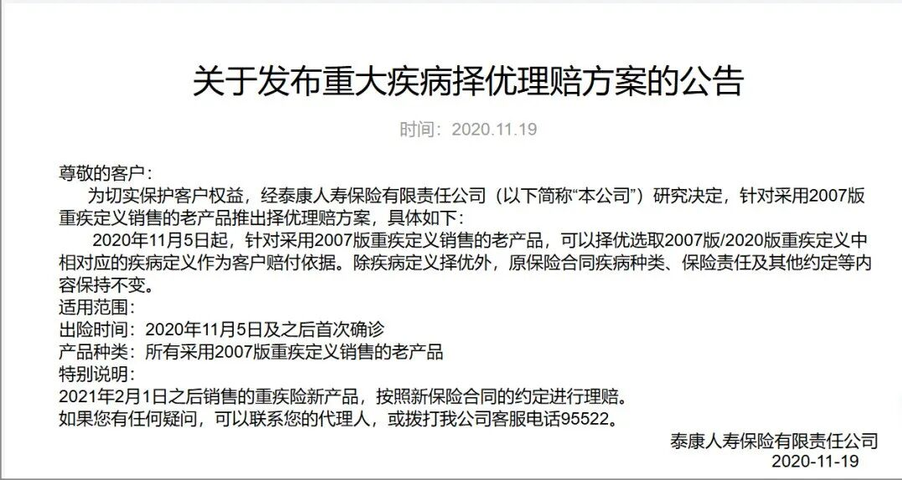
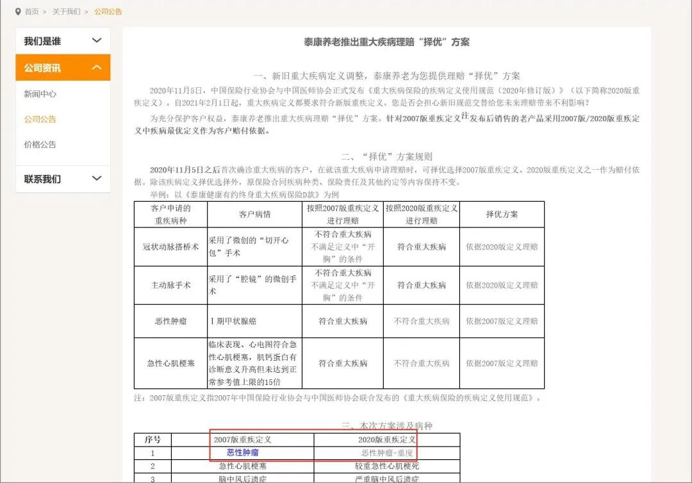
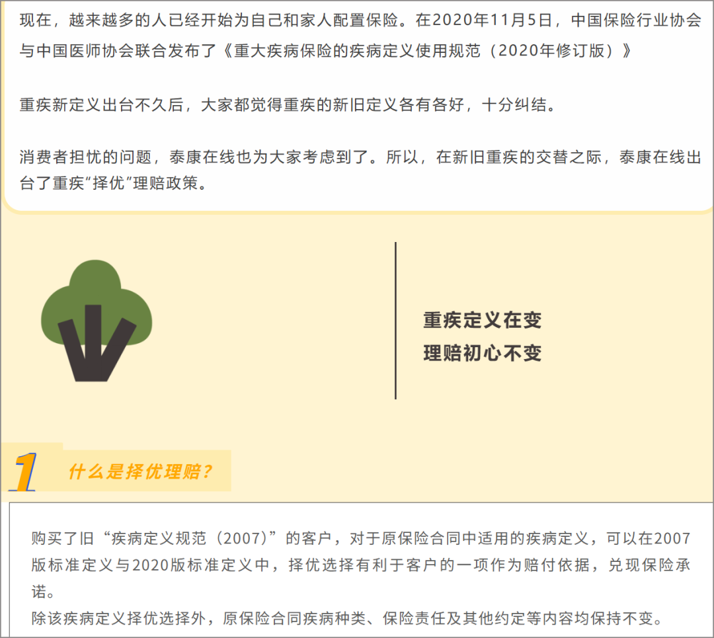
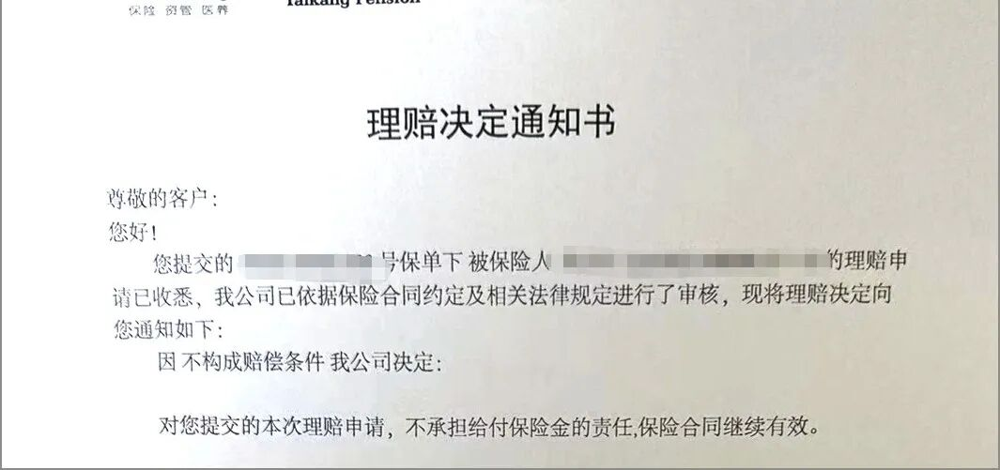
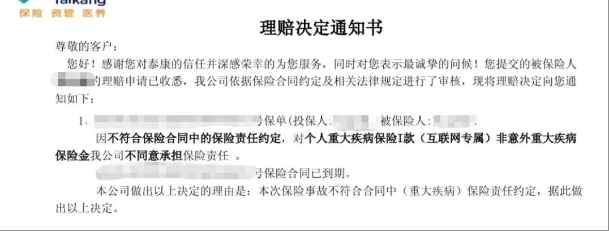
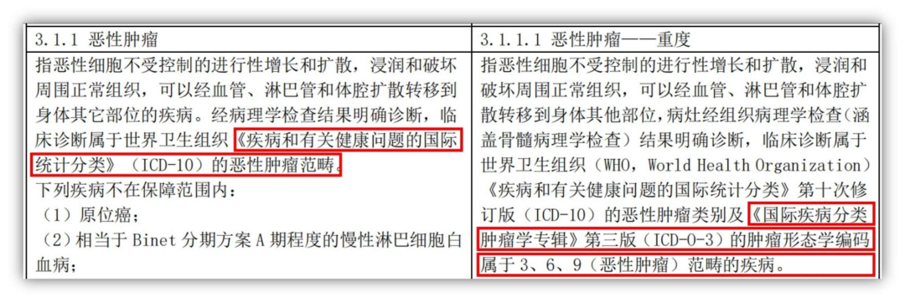
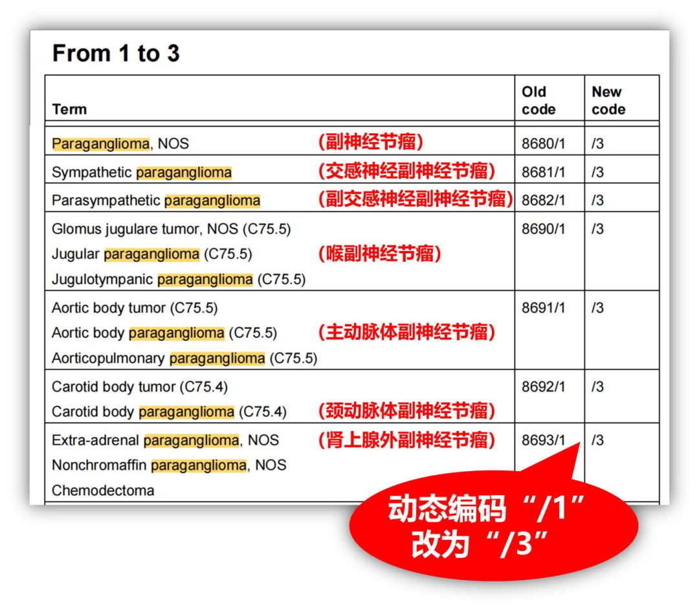
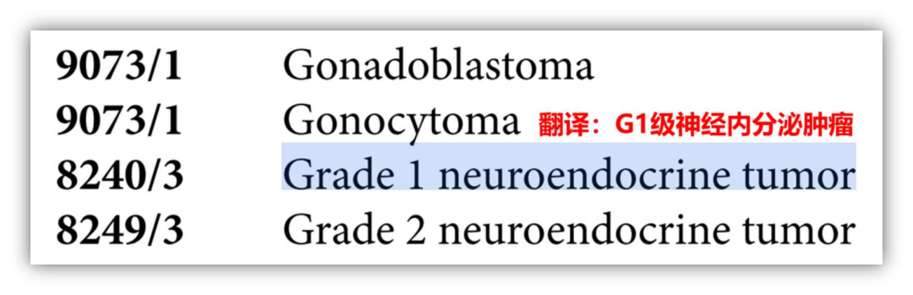

千万不要相信某些保险公司的承诺
我们通过两个拒赔案子告诉大家，某些保司的承诺就是个屁，放过之后就随风消散了，千万别当真。
众所周知，在2020年11月5日，中国保险行业协会与中国医师协会联合发布了《重大疾病保险的疾病定义使用规范（2020年修订版）》，也就是我们通常说的颁布了重疾新规。对照新旧版的重疾定义，有的是旧版定义对消费者更好，有的是新定义对消费者更有利。因为新产品还未出来，各大保险公司怕影响当下的保险销售，纷纷发布公告可以“重大疾病择优理赔”。某保司也不例外，旗下三家大公司，人寿保险、养老保险和在线保险纷纷公布了自己的择优理赔方案（官网可查）。



了解了旗下三家公司承诺的“重疾择优理赔方案的公告”，我们再通过几个具体的理赔案子看看某保司是怎么履行承诺的。
案件1：人寿保险
客户投保了人寿保险《健康人生 D 款重大疾病保险》，今年客户确诊确诊（腹膜后）副神经节瘤，人寿保险以本病不符合保险责任为由不予赔付。

案件2：养老保险
客户投保了养老保险的《健康有约重大疾病保险》，今年客户确诊肠神经内分泌肿瘤（WHO 分级 G1），养老保险以本病不构成赔偿条件为由不予赔付。

案件3：在线保险
客户投保了在线保险的《个人重大疾病保险》，今年客户查出低级别神经内分泌肿瘤（WHO分级G1），在线保险以本病不构成赔偿条件不符合合同中(重大疾病)保险责任约定为由不予赔付。

上面三起拒赔案件所购保险都是2007年的旧重疾定义保险，我们了解一下恶性肿瘤（重度）新旧定义都都有哪些不同：

中国保险行业协会、中国医师协会《重大疾病保险的疾病定义使用规范（2007版）》、《重大疾病保险的疾病定义使用规范（2020年修订版）》
根据2019年 ICD-O-3第二次修订版，案件1的副神经节瘤动态编码是“3”，而案件2和3的神经内分泌瘤的动态编码也是“3”

《ICD-O第3版第2次修订版》

《ICD-O第3版第2次修订版》
由此可见根据重疾新定义，这三个案件都是应该按重疾赔付的。结果大家都看到了，这三个案件都是拒赔。某保司（包括旗下三家保险公司）对于”重疾择优理赔“的承诺至今还挂在官网上，转头就不认了。所以你认清一家保司绝不是从它的承诺开始，而是要看它是怎么做的。
——End——
我是任巍巍，
中山大学工商管理硕士，
大家可以信任的十年资深保险顾问。
帮大家解决怎么买保险问题，
帮大家解决保险拒赔问题。
有求助或者交流可以扫码加任老师的微信
本文由 ShawnCH（何智翔）轉發，透過微信聊天記錄自動提取並整理。 原文連結：https://mp.weixin.qq.com/s?__biz=MzUxNzM5MzQwNg==&mid=2247485050&idx=1&sn=1ed926babdf2945f4c8eb2ae0ab70d45&chksm=f895a2ead5dd7b2d0b8657cd257cd403aaf1cca57d972fbb72dfc2a7f3a71359cd50cd147e63&mpshare=1&scene=1&srcid=0201YQeLBDnDRoA9ok1goM4K&sharer_shareinfo=5f74137250f13905e3e34cb839efab14&sharer_shareinfo_first=5f74137250f13905e3e34cb839efab14#rd